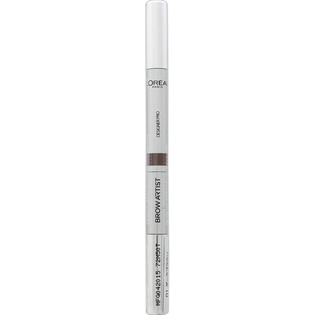

返回列表
产品名称：ロレアル パリ ブロウアーティスト デザイナープロ 01 ダークブラウン

日本ロレアル ロレアル パリ ブロウアーティスト デザイナープロ 01 ダークブラウン ＿
メーカー 日本ロレアル
JANコード 4935421249812
商品の特徴
簡単ステップで仕上がる洗練ブロウ。
- 成分・分量
- ○ペンシル
ステアリン酸、モクロウ、水添ヒマシ油、トリ酢酸テトラステアリン酸スクロース、脂肪酸（C10-30）（コレステロール／ラノステロール）エステルズ、トリエチルヘキサノイン、セスキオレイン酸ソルビタン、トコフェロール、［＋／－］酸化鉄、マイカ、酸化チタン
○パウダー
タルク、トリイソステアリン、ヒドロキシステアリン酸エチルヘキシル、シリカ、ジメチコン、イソステアリン酸ソルビタン、テトラ（ヒドロキシステアリン酸／イソステアリン酸）ジペンタエリスリチル、テヒドロ酢酸Na、ステアリン酸Mg、メチコン、トコフェロール、［＋／－］マイカ、酸化鉄、酸化チタン、酸化スズ
- 用法及び用量
- STEP1 ペンシル
眉の真ん中から眉尻にかけて、眉毛の足りない部分を描き足し、眉毛の形をつくります。眉毛がまばらな方は、眉毛1本1本の間を埋めるように描き足してください。
STEP2 パウダー
眉頭から真ん中あたりにパウダーをのせ、自然な立体感を出していきます。元の眉の薄い方は、パウダーを多くつけすぎると、重たくなってしまうため、全体的に薄くつけると、より立体感が出ます。
STEP3 ブラシ
ブラシで眉毛の流れと濃さを整えます。よりナチュラルに仕上げるために、眉毛の流れを整えた後、眉毛のふちを軽くブラッシングする事により、眉毛が肌になじみ”描いた感”が無くなり、自然な仕上がりになります。